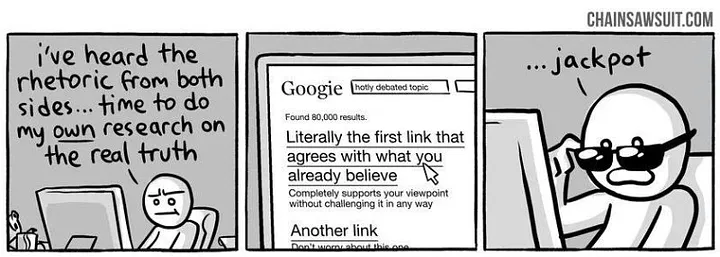
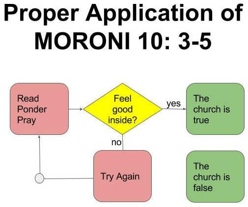
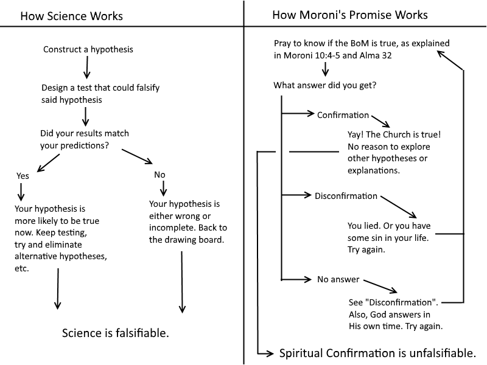

🧠 Cognitive Bias¶
How do we discern between faith and cognitive bias?
Overview of Biases¶
Biases are not inherently bad. They are not a sign of ignorance, bad intention, nor contrarianism.
There is simply too much information in the world for us to ingest and process, in order for us to come to a reliable conclusion. We have no choice but to filter it, or else we’d never come to a conclusion on anything. Cognitive biases are ways out brain tries to determine what’s most likely to be useful. Our brains aren’t always good at this, so philosophically-minded folks have categorized some of these filtering methods as cognitive biases.
We, as mortal, lay folk, don’t have all information on everything. We must extrapolate and fill in gaps. We are prone to doing this improperly. This notion isn’t really anti-religious, by my understanding. More of philosophical, neither for nor against religion. Recognizing them is used for logical discourse on any topic.
We are humans with emotions. This is not something to be ashamed of. I don’t care how smart one thinks they are, every human is prone to this. I certainly am. Try as we may, being consistently and constantly open-minded is not feasible. You, reader, should be aware of these biases. Then, compare how they fit with your existing beliefs.
Oversimplification¶
A quick example of where this is going:
- Something good happens to the prospective or current Mormon? A blessing from God. The person is on the right track!
- Something bad happened to the prospective Mormon? Satan is trying to derail the baptism. The person is on the right track!
- Something bad happens to a current Mormon? Life is a test. This is a reminder to repent and obey! The person is on the right track!
- Something good happens to a former Mormon? It’s not REAL happiness. They have forfeited real blessings from God.
- Something bad happens to a former Mormon? Of course! The wicked will not prosper! They have forfeited real blessings from God.
Confirmation bias¶

The confirmation bias is the tendency to listen more often to information that confirms our existing beliefs. Through this bias, people tend to favor information that reinforces the things they already think or believe.
Examples include:
- Only paying attention to information that confirms your beliefs about issues such as gun control and global warming
- Only following people on social media who share your viewpoints
- Choosing news sources that present stories that support your views
- Refusing to listen to the opposing side
- Not considering all of the facts in a logical and rational manner
There are a few reasons why this happens. One is that only seeking to confirm existing opinions helps limit mental resources we need to use to make decisions. It also helps protect self-esteem by making people feel that their beliefs are accurate.
People on two sides of an issue can listen to the same story and walk away with different interpretations that they feel validates their existing point of view. This is often indicative that the confirmation bias is working to "bias" their opinions.
The problem with this is that it can lead to poor choices, an inability to listen to opposing views, or even contribute to othering people who hold different opinions.
— 13 Types of Common Cognitive Biases That Might Be Impairing Your Judgment , Kendra Cherry, MSEd, Updated on February 22, 2024
From the perspective of Mormonism, faith and confirmation bias seem very difficult to distinguish.
When questioning members are advised to "take your questions to the Lord and to other faithful sources," what kind of answer can they expect? They're only asking people who believe.
- As long as God continues to help me find my car keys, I won't think about all the suffering in Palestine and Ukraine. All is well in Zion. Zion prospers.
- Keep paying tithing because God has promised ‘blessings such that there shall not be room enough to receive them’, even though month after month we continue in financial struggles.
Moroni's Promise¶
Failure to confirm the truth of an impossible counter-claim means that the claim is true.
And when ye shall receive these things, I would exhort you that ye would ask God, the Eternal Father, in the name of Christ, if these things are not true; and if ye shall ask with a sincere heart, with real intent, having faith in Christ, he will manifest the truth of it unto you, by the power of the Holy Ghost.
And by the power of the Holy Ghost ye may know the truth of all things.

Let's examine some of this. It's setting ourselves up for confirmation bias.
Set yourself up for success. Have a sincere desire, have "real intent", believing you will receive an answer.
... and if ye shall ask with a sincere heart, with real intent, having faith in Christ ...
Seek belief through prayer. What will the answer be? idk lol, but if praying doesn't give you the "yes it's true" answer, pray again, you did it wrong.
... he will manifest the truth of it unto you, by the power of the Holy Ghost.
You will receive a confirmation in a nonspecific way. Is it a warm fuzzy feeling? There's your answer. That verifies what you expected to find an answer to. It's true now!
Calling any desirable outcome a "confirmation" may even be too strong of a word. "Did praying about this make you feel really good? No? Did you feel good at all? No? Well did you at least feel not bad? That's God."
Next, make sure you bear testimony. Put your reputation into it. Verbalize your beliefs repeatedly. Insist that it's true. After enough iterations of this, you'll think “I heard myself say that it was true when I bore my testimony so it must be true.”
Another way to seek a testimony seems astonishing when compared with the methods of obtaining other knowledge. We gain or strengthen a testimony by bearing it.
— Testimony, Dallin H Oaks, General Conference April 2008
Don't forget to only study from approved sources. Just listen to things you already think are true!
"Ask God if the things in this record are not true. If ye shall ask with a sincere heart, with real intent, having faith in Christ, he will manifest the truth of it unto you, by the power of the Holy Ghost. ... And whatsoever thing is good is just and true; wherefore, nothing that is good denieth the Christ, but acknowledgeth that he is."
Moroni/JS asks the reader to ask God if the record is not true... and if it is true, God will confirm it."
The claim is "this historical record is true and God confirmed it." The counter-claim is "I asked God if it's not true and God responded with 'yeah, bro! This shit is bogus.'" However, this is an impossible counter-claim because of Moroni's/JS's conditions:
- You must ask with a sincere heart, with real intent (this is a subjective condition; who determines what is sincere with real intent?)
- all good things are true.
- All good things acknowledgeth the Christ.
- This record acknowledgeth the Christ, therefore it is good.
- Because this record is good, it is therefore true.
- Thus, God cannot whisper anything to you other than "it's true."
Does your result agree with theory? No? Something is wrong with your experiment, then. Do it again.

A non-Mormon example of Moroni's Fallacy: "just ask yourself the question, is it impossible for aliens to have been involved in the construction of the pyramids? How do you know aliens were not involved? I'm not saying they used spaceships to lift rocks or anything like that; they might have used advanced tech to inspire the Egyptians to build them. Who knows? Good science means following the evidence to any conclusion, no matter how improbable. Given time, and given how many open questions remain about the pyramids, Egyptologists will have no choice but to consider this possibility."
More links¶
- https://effectiviology.com/confirmation-bias/
- https://www.globalcognition.org/confirmation-bias-3-cures/
- https://betterhumans.pub/cognitive-bias-cheat-sheet-55a472476b18